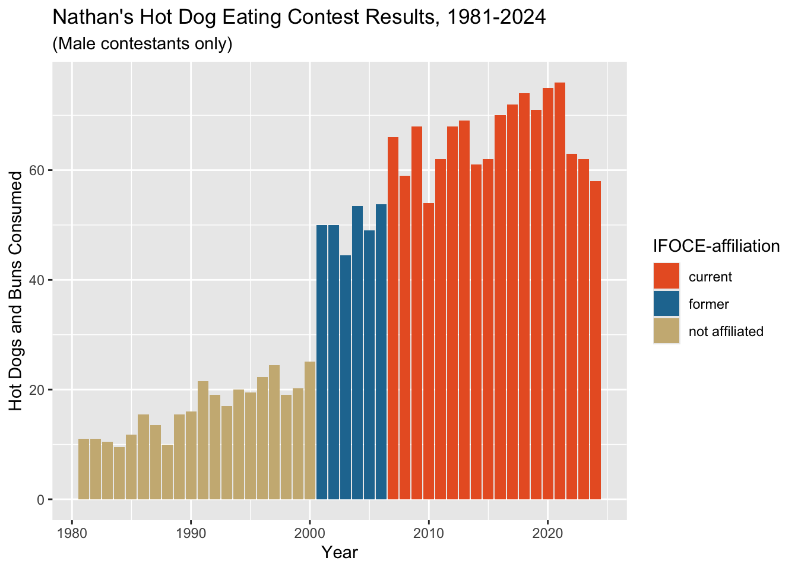
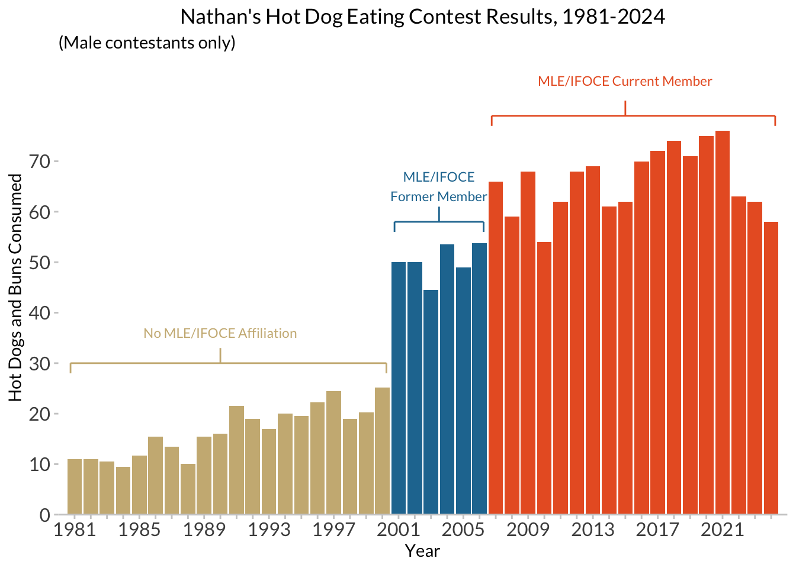

Goals for Lab 01
- Get your feet wet!
- Innoculate you against
ggplot2 errors- we all get them!
- Get exposed to the range of things you can do, before we go deeep…
- Develop your own personal preferences for data visualizations!
- Do you like or hate gridlines?
- What fonts do you find pleasant to read?
- What kinds of colors do you like?
- Are you team
theme_gray or theme_bw (or theme_minimal)?
These are important questions, and I want you to develop (well-informed) opinions on these matters! 
Nathan’s Hot Dog Eating Contest

This includes a reconstruction of Nathan Yau’s hot dog contest example, as interpreted by Jackie Wirz, ported into R and ggplot2 by Steven Bedrick for a workshop for the OHSU Data Science Institute, and finally adapted by Alison Hill for all you intrepid Data-Viz-onauts!
First, we load our packages:
library(tidyverse)
library(extrafont)
library(here)
Read in and wrangle data
Next, we load some data. In the RStudio Cloud project for this lab, you will see a data directory with the necessary files. We can read it in using read_csv, and along the way use col_factor to tell it how to handle the gender column.
hot_dogs <- read_csv(here::here("data", "hot_dog_contest.csv"),
col_types = cols(
gender = col_factor(levels = NULL)
))
Note that if the data were not already downloaded locally, read_csv() can load CSV files from a URL:
hot_dogs <- read_csv("http://bit.ly/cs631-hotdog",
col_types = cols(
gender = col_factor(levels = NULL)
))
Either way you do it, check it out once read in and make sure it looks like this!
glimpse(hot_dogs)
Observations: 49
Variables: 4
$ year <dbl> 2017, 2017, 2016, 2016, 2015, 2015, 2014, 2014, 2013, 2013,…
$ gender <fct> male, female, male, female, male, female, male, female, mal…
$ name <chr> "Joey Chestnut", "Miki Sudo", "Joey Chestnut", "Miki Sudo",…
$ num_eaten <dbl> 72.000, 41.000, 70.000, 38.000, 62.000, 38.000, 61.000, 34.…
hot_dogs
# A tibble: 49 x 4
year gender name num_eaten
<dbl> <fct> <chr> <dbl>
1 2017 male Joey Chestnut 72
2 2017 female Miki Sudo 41
3 2016 male Joey Chestnut 70
4 2016 female Miki Sudo 38
5 2015 male Matthew Stonie 62
6 2015 female Miki Sudo 38
7 2014 male Joey Chestnut 61
8 2014 female Miki Sudo 34
9 2013 male Joey Chestnut 69
10 2013 female Sonya Thomas 36.8
# … with 39 more rows
We’ll be wanting to somehow include information about whether a given year was before or after the incorporation of the competitive eating league, so let’s add an indicator field to the data using mutate(). Also, the data’s a little sketchy pre-1981 and for our purposes today we’ll be focusing on males only, so let’s do some filtering too:
hot_dogs <- hot_dogs %>%
mutate(post_ifoce = year >= 1997) %>%
filter(year >= 1981 & gender == 'male')
hot_dogs
# A tibble: 37 x 5
year gender name num_eaten post_ifoce
<dbl> <fct> <chr> <dbl> <lgl>
1 2017 male Joey Chestnut 72 TRUE
2 2016 male Joey Chestnut 70 TRUE
3 2015 male Matthew Stonie 62 TRUE
4 2014 male Joey Chestnut 61 TRUE
5 2013 male Joey Chestnut 69 TRUE
6 2012 male Joey Chestnut 68 TRUE
7 2011 male Joey Chestnut 62 TRUE
8 2010 male Joey Chestnut 54 TRUE
9 2009 male Joey Chestnut 68 TRUE
10 2008 male Joey Chestnut 59 TRUE
# … with 27 more rows
Plot The Data
Now let’s try making a first crack at a sketchy plot:
ggplot(hot_dogs, aes(x = year, y = num_eaten)) +
geom_col()

Note that our data is already in “counted” form, so we’re using geom_col() instead of geom_bar().
Add Axis Labels And Title
ggplot(hot_dogs, aes(x = year, y = num_eaten)) +
geom_col() +
labs(x = "Year", y = "Hot Dogs and Buns Consumed") +
ggtitle("Nathan's Hot Dog Eating Contest Results, 1981-2017")
Play With Colors
Challenge #1:
Make 3 versions of the last plot we just made:
In the first, make all the columns outlined in “white”.
In the second, make all the columns outlined in “white” and filled in “navyblue”.
In the third, make all the columns outlined in “white” and filled in according to whether or not post_ifoce is TRUE or FALSE (use default colors for now).
ggplot(hot_dogs, aes(x = year, y = num_eaten)) +
geom_col(colour = "white") +
labs(x = "Year", y = "Hot Dogs and Buns Consumed") +
ggtitle("Nathan's Hot Dog Eating Contest Results, 1981-2017")

ggplot(hot_dogs, aes(x = year, y = num_eaten)) +
geom_col(colour = "white", fill = "navyblue") +
labs(x = "Year", y = "Hot Dogs and Buns Consumed") +
ggtitle("Nathan's Hot Dog Eating Contest Results, 1981-2017")

ggplot(hot_dogs, aes(x = year, y = num_eaten)) +
geom_col(aes(fill = post_ifoce), colour = "white") +
labs(x = "Year", y = "Hot Dogs and Buns Consumed") +
ggtitle("Nathan's Hot Dog Eating Contest Results, 1981-2017")

Challenge #2:
What if you want to change the legend in the last plot you made? Use google to figure out how to do the following:
ggplot(hot_dogs, aes(x = year, y = num_eaten)) +
geom_col(aes(fill = post_ifoce), colour = "white") +
labs(x = "Year", y = "Hot Dogs and Buns Consumed") +
ggtitle("Nathan's Hot Dog Eating Contest Results, 1981-2017") +
scale_fill_discrete(name = "",
labels=c("Pre-IFOCE", "Post-IFOCE"))

Change The Dataset
Now, let’s change the question a little bit. This looks at the creation of the IFOCE. What about the affiliation of the contestants? We’ll need some different data for this. Through the Magic Of Data Science™, we have dug that information up and put it into an expanded version of our CSV file available at http://bit.ly/cs631-hotdog-affiliated.
Challenge #3:
Let’s work with this new dataset! Do the following:
Read in the “hot_dog_contest_with_affiliation.csv” data file, using col_types to read in affiliated and gender as factors.
Within a mutate, create a new variable called post_ifoce that is TRUE if year is greater than or equal to 1997.
Also filter the new data for only years 1981 and after, and only for male competitors.
hdm_affil <- read_csv(here::here("data", "hot_dog_contest_with_affiliation.csv"),
col_types = cols(
affiliated = col_factor(levels = NULL),
gender = col_factor(levels = NULL)
)) %>%
mutate(post_ifoce = year >= 1997) %>%
filter(year >= 1981 & gender == "male")
hdm_affil <- read_csv(here::here("data", "hot_dog_contest_with_affiliation.csv"),
col_types = cols(
affiliated = col_factor(levels = NULL),
gender = col_factor(levels = NULL)
)) %>%
mutate(post_ifoce = year >= 1997) %>%
filter(year >= 1981 & gender == "male")
glimpse(hdm_affil)
Observations: 37
Variables: 6
$ year <dbl> 2017, 2016, 2015, 2014, 2013, 2012, 2011, 2010, 2009, 2008…
$ gender <fct> male, male, male, male, male, male, male, male, male, male…
$ name <chr> "Joey Chestnut", "Joey Chestnut", "Matthew Stonie", "Joey …
$ num_eaten <dbl> 72.000, 70.000, 62.000, 61.000, 69.000, 68.000, 62.000, 54…
$ affiliated <fct> current, current, current, current, current, current, curr…
$ post_ifoce <lgl> TRUE, TRUE, TRUE, TRUE, TRUE, TRUE, TRUE, TRUE, TRUE, TRUE…
Challenge #4:
Let’s do some basic EDA with this new dataset! Do the following:
Use dplyr::distinct to figure out how many unique values there are of affiliated.
Use dplyr::count to count the number of rows for each unique value of affiliated; use ?count to figure out how to sort the counts in descending order.
hdm_affil %>%
distinct(affiliated)
# A tibble: 3 x 1
affiliated
<fct>
1 current
2 former
3 not affiliated
hdm_affil %>%
count(affiliated, sort = TRUE)
# A tibble: 3 x 2
affiliated n
<fct> <int>
1 not affiliated 20
2 current 11
3 former 6
Now let’s plot this new data, and fill the columns according to our new affiliated column.
ggplot(hdm_affil, aes(x = year, y = num_eaten)) +
geom_col(aes(fill = affiliated)) +
labs(x = "Year", y = "Hot Dogs and Buns Consumed") +
ggtitle("Nathan's Hot Dog Eating Contest Results, 1981-2017")

Challenge #5:
Do the following updates to the last plot we just made:
Update the colors using hex colors: c('#E9602B','#2277A0','#CCB683').
Change the legend title to “IFOCE-affiliation”.
Save this plot object as “affil_plot”.
affil_plot <- ggplot(hdm_affil, aes(x = year, y = num_eaten)) +
geom_col(aes(fill = affiliated)) +
labs(x = "Year", y = "Hot Dogs and Buns Consumed") +
ggtitle("Nathan's Hot Dog Eating Contest Results, 1981-2017") +
scale_fill_manual(values = c('#E9602B','#2277A0','#CCB683'),
name = "IFOCE-affiliation")
affil_plot

Play With Scales & Coordinates
The spacing’s a little funky down near the origin of the plot. The documentation tells us that the defaults are c(0.05, 0) for continuous variables. The first number is multiplicative and the second is additive.
The default was that 1.8 ((2017-1981)*.05+0) was added to the right and left sides of the x-axis as padding, so the effective default limits were c(1979, 2019).
Let’s tighten that up with the expand property for the scale_y_continuous (we’ll also change the breaks for y-axis tick marks here) and scale_x_continuous settings:
affil_plot <- affil_plot +
scale_y_continuous(expand = c(0, 0),
breaks = seq(0, 70, 10)) +
scale_x_continuous(expand = c(0, 0))
affil_plot

But now the plot looks like it is wearing tight pants.

Let’s loosen things up a bit by updating the plot coordinates.
Using coord_cartesian is the preferred layer here because “setting limits on the coordinate system will zoom the plot (like you’re looking at it with a magnifying glass), and will not change the underlying data like setting limits on a scale will.”
Lesson:
Don’t change limits unless you really know what you are doing! Most of the time, you want to change the coordinates instead.
affil_plot <- affil_plot +
coord_cartesian(xlim = c(1980, 2018), ylim = c(0, 80))
affil_plot
Play With Theme Settings
Let’s change some key theme settings:
affil_plot +
theme(plot.title = element_text(hjust = 0.5)) +
theme(axis.text = element_text(size = 12)) +
theme(panel.background = element_blank()) +
theme(axis.line.x = element_line(color = "gray80", size = 0.5)) +
theme(axis.ticks = element_line(color = "gray80", size = 0.5))

Lesson:
You can change almost anything that your heart desires to change!
By default, plot titles in ggplot2 are left-aligned. For hjust:
0 == left0.5 == centered1 == right
We could also save all these as a custom theme. We are not fans of the default font, so we are also going to change this. To do this, you need to install the (extrafont package)[https://github.com/wch/extrafont] and follow its setup instructions before doing this next step.
hot_diggity <- theme(plot.title = element_text(hjust = 0.5),
axis.text = element_text(size = 12),
panel.background = element_blank(),
axis.line.x = element_line(color = "gray80", size = 0.5),
axis.ticks = element_line(color = "gray80", size = 0.5),
text = element_text(family = "Lato") # need extrafont for this
)
affil_plot + hot_diggity

We could also use someone else’s theme:
library(ggthemes)
affil_plot + theme_fivethirtyeight(base_family = "Lato")

affil_plot + theme_tufte( base_family = "Palatino")

The final thing we have to mess with is the x-axis ticks and labels. We’ll do this in two steps, then override our previous layer scale_x_continuous.
years_to_label <- seq(from = 1981, to = 2017, by = 4)
years_to_label
[1] 1981 1985 1989 1993 1997 2001 2005 2009 2013 2017
hd_years <- hdm_affil %>%
distinct(year) %>%
mutate(year_lab = ifelse(year %in% years_to_label, year, ""))
affil_plot +
hot_diggity +
scale_x_continuous(expand = c(0, 0),
breaks = hd_years$year,
labels = hd_years$year_lab)
Scale for 'x' is already present. Adding another scale for 'x', which will
replace the existing scale.
Final (final, final) version
Don’t name your files “final” :)

All together in one chunk, here is our final (for now) plot! I’m also adding some additional elements here to show you options:
nathan_plot <- ggplot(hdm_affil, aes(x = year, y = num_eaten)) +
geom_col(aes(fill = affiliated)) +
labs(x = "Year", y = "Hot Dogs and Buns Consumed") +
ggtitle("Nathan's Hot Dog Eating Contest Results, 1981-2017") +
scale_fill_manual(values = c('#E9602B','#2277A0','#CCB683'),
name = "IFOCE-affiliation") +
hot_diggity +
scale_y_continuous(expand = c(0, 0),
breaks = seq(0, 70, 10)) +
scale_x_continuous(expand = c(0, 0),
breaks = hd_years$year,
labels = hd_years$year_lab) +
coord_cartesian(xlim = c(1980, 2018), ylim = c(0, 80))
nathan_plot

Adding some plot annotations rather than having a fill legend:
nathan_ann <- nathan_plot +
guides(fill = FALSE) +
coord_cartesian(xlim = c(1980, 2019), ylim = c(0, 85)) +
annotate('segment', x=1980.75, xend=2000.25, y= 30, yend=30, size=0.5, color="#CCB683")+
annotate('segment', x=1980.75, xend=1980.75, y= 30, yend=28, size=0.5, color="#CCB683") +
annotate('segment', x=2000.25, xend=2000.25, y= 30, yend=28, size=0.5, color="#CCB683") +
annotate('segment', x=1990, xend=1990, y= 33, yend=30, size=0.5, color="#CCB683") +
nathan_ann
Coordinate system already present. Adding new coordinate system, which will replace the existing one.
Error in eval(expr, envir, enclos): object 'nathan_ann' not found
annotate('text', x=1990, y=36, label="No MLE/IFOCE Affiliation", color="#CCB683", family="Lato", hjust=0.5, size = 3) +
annotate('segment', x=2000.75, xend=2006.25, y= 58, yend=58, size=0.5, color="#2277A0") +
annotate('segment', x=2000.75, xend=2000.75, y= 58, yend=56, size=0.5, color="#2277A0") +
annotate('segment', x=2006.25, xend=2006.25, y= 58, yend=56, size=0.5, color="#2277A0") +
annotate('segment', x=2003.5, xend=2003.5, y= 61, yend=58, size=0.5, color="#2277A0") +
annotate('text', x=2003.5, y=65, label="MLE/IFOCE\nFormer Member", color="#2277A0", family="Lato", hjust=0.5, size = 3) +
annotate('segment', x=2006.75, xend=2017.25, y= 76, yend=76, size=0.5, color="#E9602B") +
annotate('segment', x=2006.75, xend=2006.75, y= 76, yend=74, size=0.5, color="#E9602B") +
annotate('segment', x=2017.25, xend=2017.25, y= 76, yend=74, size=0.5, color="#E9602B") +
annotate('segment', x=2012, xend=2012, y= 79, yend=76, size=0.5, color="#E9602B") +
annotate('text', x=2012, y=82, label="MLE/IFOCE Current Member", color="#E9602B", family="Lato", hjust=0.5, size = 3)
Error: Cannot add ggproto objects together. Did you forget to add this object to a ggplot object?
nathan_ann
Error in eval(expr, envir, enclos): object 'nathan_ann' not found
Finally, adding in another layer of data from female contestants:
hdm_females <- read_csv(here::here("data", "hot_dog_contest_with_affiliation.csv"),
col_types = cols(
affiliated = col_factor(levels = NULL),
gender = col_factor(levels = NULL)
)) %>%
mutate(post_ifoce = year >= 1997) %>%
filter(year >= 1981 & gender == "female")
glimpse(hdm_females)
Observations: 7
Variables: 6
$ year <dbl> 2017, 2016, 2015, 2014, 2013, 2012, 2011
$ gender <fct> female, female, female, female, female, female, female
$ name <chr> "Miki Sudo", "Miki Sudo", "Miki Sudo", "Miki Sudo", "Sonya…
$ num_eaten <dbl> 41.00, 38.00, 38.00, 34.00, 36.75, 45.00, 40.00
$ affiliated <fct> current, current, current, current, current, current, curr…
$ post_ifoce <lgl> TRUE, TRUE, TRUE, TRUE, TRUE, TRUE, TRUE
nathan_w_females <- nathan_ann +
# add in the female data, and manually set a fill color
geom_col(data = hdm_females,
width = 0.75,
fill = "#F68A39")
Error in eval(expr, envir, enclos): object 'nathan_ann' not found
nathan_w_females
Error in eval(expr, envir, enclos): object 'nathan_w_females' not found
And adding a final caption:
caption <- paste(strwrap("* From 2011 on, separate Men's and Women's prizes have been awarded. All female champions to date have been MLE/IFOCE-affiliated.", 70), collapse="\n")
nathan_w_females +
# now an asterisk to set off the female scores, and a caption
annotate('text', x = 2018.5, y = 39, label="*", family = "Lato", size = 8) +
labs(caption = caption) +
theme(plot.caption = element_text(family = "Lato", size=8, hjust=0, margin=margin(t=15)))
Error in eval(expr, envir, enclos): object 'nathan_w_females' not found
